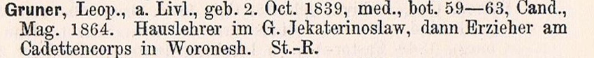

Русский Ботаник Леонид Федорович Грунер (1839 – ок 1917)
A. Hasselblatt, Dr. G. Otto
На главную
Глоссарий

Из книги:
A. Hasselblatt, Dr. G. Otto, Album Akademicum der Kaiserlichen Universität Dorpat, Dorpat, 1889, S. 513
На главную
Глоссарий
Наверх
University Edition v 1.0